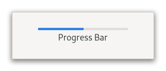

Gtk.ProgressBar¶
Example¶
- Subclasses
None
Methods¶
- Inherited
Gtk.Widget (180), GObject.Object (37), Gtk.Accessible (15), Gtk.Buildable (1), Gtk.Orientable (2)
- Structs
class |
|
|
|
|
|
|
|
|
|
|
|
|
|
|
|
|
|
|
|
|
Virtual Methods¶
Properties¶
- Inherited
Name |
Type |
Flags |
Short Description |
|---|---|---|---|
r/w/en |
|||
r/w/en |
|||
r/w/en |
|||
r/w/en |
|||
r/w/en |
|||
r/w |
Signals¶
- Inherited
Fields¶
- Inherited
Class Details¶
- class Gtk.ProgressBar(**kwargs)¶
- Bases
- Abstract
No
GtkProgressBaris typically used to display the progress of a long running operation.It provides a visual clue that processing is underway.
GtkProgressBarcan be used in two different modes: percentage mode and activity mode.An example
Gtk.ProgressBarWhen an application can determine how much work needs to take place (e.g. read a fixed number of bytes from a file) and can monitor its progress, it can use the
GtkProgressBarin percentage mode and the user sees a growing bar indicating the percentage of the work that has been completed. In this mode, the application is required to call [method`Gtk`.ProgressBar.set_fraction] periodically to update the progress bar.When an application has no accurate way of knowing the amount of work to do, it can use the
GtkProgressBarin activity mode, which shows activity by a block moving back and forth within the progress area. In this mode, the application is required to call [method`Gtk`.ProgressBar.pulse] periodically to update the progress bar.There is quite a bit of flexibility provided to control the appearance of the
GtkProgressBar. Functions are provided to control the orientation of the bar, optional text can be displayed along with the bar, and the step size used in activity mode can be set.- CSS nodes
`` progressbar[.osd] ├── [text] ╰── trough[.empty][.full]
╰── progress[.pulse]
GtkProgressBarhas a main CSS node with name progressbar and subnodes with names text and trough, of which the latter has a subnode named progress. The text subnode is only present if text is shown. The progress subnode has the style class .pulse when in activity mode. It gets the style classes .left, .right, .top or .bottom added when the progress ‘touches’ the corresponding end of theGtk.ProgressBar. The .osd class on the progressbar node is for use in overlays like the one Epiphany has for page loading progress.- Accessibility
GtkProgressBaruses theGtk.AccessibleRole.PROGRESS_BARrole.- get_ellipsize()[source]¶
- Returns
PangoEllipsizeMode- Return type
Returns the ellipsizing position of the progress bar.
See [method`Gtk`.ProgressBar.set_ellipsize].
- get_fraction()[source]¶
- Returns
a fraction from 0.0 to 1.0
- Return type
Returns the current fraction of the task that’s been completed.
- get_pulse_step()[source]¶
- Returns
a fraction from 0.0 to 1.0
- Return type
Retrieves the pulse step.
See [method`Gtk`.ProgressBar.set_pulse_step].
- get_show_text()[source]¶
-
Returns whether the
GtkProgressBarshows text.See [method`Gtk`.ProgressBar.set_show_text].
- get_text()[source]¶
-
Retrieves the text that is displayed with the progress bar.
The return value is a reference to the text, not a copy of it, so will become invalid if you change the text in the progress bar.
- pulse()[source]¶
Indicates that some progress has been made, but you don’t know how much.
Causes the progress bar to enter “activity mode,” where a block bounces back and forth. Each call to [method`Gtk`.ProgressBar.pulse] causes the block to move by a little bit (the amount of movement per pulse is determined by [method`Gtk`.ProgressBar.set_pulse_step]).
- set_ellipsize(mode)[source]¶
- Parameters
mode (
Pango.EllipsizeMode) – aPangoEllipsizeMode
Sets the mode used to ellipsize the text.
The text is ellipsized if there is not enough space to render the entire string.
- set_fraction(fraction)[source]¶
- Parameters
fraction (
float) – fraction of the task that’s been completed
Causes the progress bar to “fill in” the given fraction of the bar.
The fraction should be between 0.0 and 1.0, inclusive.
- set_inverted(inverted)[source]¶
-
Sets whether the progress bar is inverted.
Progress bars normally grow from top to bottom or left to right. Inverted progress bars grow in the opposite direction.
- set_pulse_step(fraction)[source]¶
- Parameters
fraction (
float) – fraction between 0.0 and 1.0
Sets the fraction of total progress bar length to move the bouncing block.
The bouncing block is moved when [method`Gtk`.ProgressBar.pulse] is called.
- set_show_text(show_text)[source]¶
- Parameters
show_text (
bool) – whether to show text
Sets whether the progress bar will show text next to the bar.
The shown text is either the value of the [property`Gtk`.ProgressBar:text] property or, if that is
None, the [property`Gtk`.ProgressBar:fraction] value, as a percentage.To make a progress bar that is styled and sized suitably for containing text (even if the actual text is blank), set [property`Gtk`.ProgressBar:show-text] to
Trueand [property`Gtk`.ProgressBar:text] to the empty string (notNone).
- set_text(text)[source]¶
-
Causes the given text to appear next to the progress bar.
If text is
Noneand [property`Gtk`.ProgressBar:show-text] isTrue, the current value of [property`Gtk`.ProgressBar:fraction] will be displayed as a percentage.If text is non-
Noneand [property`Gtk`.ProgressBar:show-text] isTrue, the text will be displayed. In this case, it will not display the progress percentage. If text is the empty string, the progress bar will still be styled and sized suitably for containing text, as long as [property`Gtk`.ProgressBar:show-text] isTrue.
Property Details¶
- Gtk.ProgressBar.props.ellipsize¶
- Name
ellipsize- Type
- Default Value
- Flags
The preferred place to ellipsize the string.
The text will be ellipsized if the progress bar does not have enough room to display the entire string, specified as a
PangoEllipsizeMode.Note that setting this property to a value other than
Pango.EllipsizeMode.NONEhas the side-effect that the progress bar requests only enough space to display the ellipsis (”…”). Another means to set a progress bar’s width is [method`Gtk`.Widget.set_size_request].
- Gtk.ProgressBar.props.fraction¶
- Name
fraction- Type
- Default Value
0.0- Flags
The fraction of total work that has been completed.
- Gtk.ProgressBar.props.inverted¶
- Name
inverted- Type
- Default Value
- Flags
Invert the direction in which the progress bar grows.
- Gtk.ProgressBar.props.pulse_step¶
- Name
pulse-step- Type
- Default Value
0.1- Flags
The fraction of total progress to move the bounding block when pulsed.
- Gtk.ProgressBar.props.show_text¶
- Name
show-text- Type
- Default Value
- Flags
Sets whether the progress bar will show a text in addition to the bar itself.
The shown text is either the value of the [property`Gtk`.ProgressBar:text] property or, if that is
None, the [property`Gtk`.ProgressBar:fraction] value, as a percentage.To make a progress bar that is styled and sized suitably for showing text (even if the actual text is blank), set [property`Gtk`.ProgressBar:show-text] to
Trueand [property`Gtk`.ProgressBar:text] to the empty string (notNone).